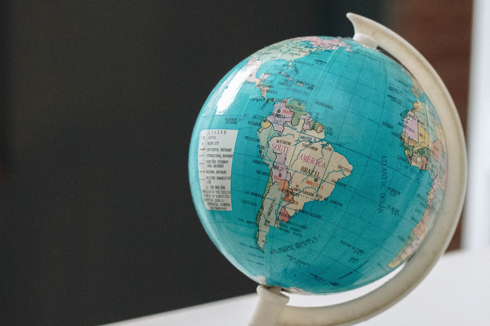
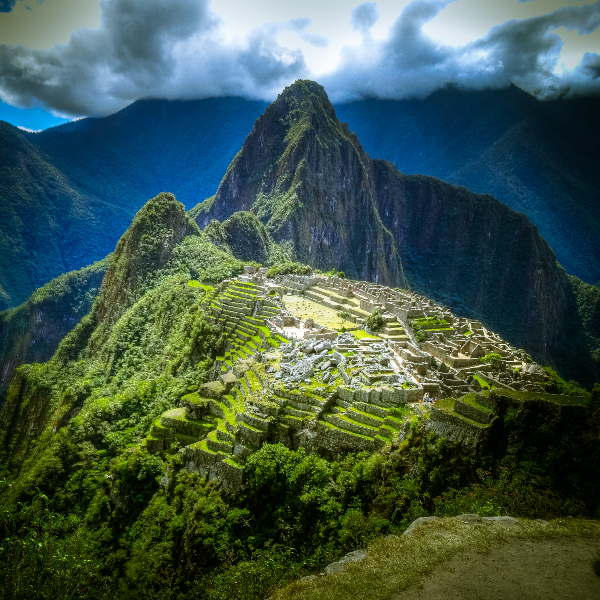

Puntos clave:
La democracia es un tipo de gobierno en el cual se le da mayor importancia a la opinión conjunta de la sociedad, es decir al pueblo. Perú es un país democrático.
El Perú es parte de diferentes tratados los cuales promueven una economía responsable y otras cosas.
El Perú está dividido en 3 regiones (costa, sierra y selva) y cuenta con 24 departamentos.
Perú, país democrático🗳
La democracia es un tipo de ordenamiento social y político en el cual las decisiones son tomadas de manera conjunta por la sociedad.
Los ciudadanos del país participan de la elección de los gobernantes del mismo. ¡Esto se hace a través del derecho a votar!
Los ciudadanos eligen como gobernador al que mejor represente los intereses del pueblo.
En un país democrático todos tienen derechos y obligaciones que cumplir. Los ciudadanos deben respetar las normas y leyes escritas en la constitución del país.
Un país democrático cree en el respeto y la igualdad.

¿Qué significa que seamos democráticos?
En nuestro país todos los ciudadanos mayores de 18 años tienen el derecho a votar y ser partícipes de las decisiones importantes del país. Por lo tanto, es un país democrático.
El Perú tiene una sola constitución la cual aplica para todos los ciudadanos del país, todos debemos seguir las mismas leyes y tenemos los mismos derechos sin importar las diferencias.
Dato curioso: Sabías que las mujeres recién obtuvieron el derecho a votar en 1955. Además, Perú fue el penúltimo país en darle éste derecho a las mujeres.
Perú en el contexto sudamericano🌎
Perú limita con Brasil, Ecuador, Colombia, Bolivia y Chile. Además, está al costado del océano pacífico. ¡Por eso tenemos una costa tan amplia! 🏖
Perú es parte del tratado de cooperación amazónica junto con países como: Brasil, Ecuador, Bolivia, Venezuela, Colombia, Guyana y Surinam.
Se busca proteger y promover el desarrollo de los territorios amazónicos.
Proteger el medioambiente.
Conservar y utilizar de forma razonable los recursos naturales.
Promover el desarrollo económico responsable de la amazonía.
El Perú es parte de “Comunidad Andina” el cual es un grupo de diferentes países de sudamérica los cuales se han unido para poder alcanzar un desarrollo integral y equilibrado.
Los países partícipes son Ecuador, Bolivia, Colombia y Perú.

División política del Perú🖋
El Perú está dividido en 24 departamentos.
Perú tiene 3 regiones: costa, sierra y selva.
La capital de Perú es Lima.
La provincia constitucional es el Callao.

Los departamentos del Perú 🇵🇪
Cada departamento tiene diferentes tradiciones y costumbres.
Los departamentos están separados en 3 regiones: costa, sierra y selva.
La costa🌊: Este territorio está ubicado junto al mar por un costado y por el otro a la sierra. Como tienen acceso directo a las aguas del océano pacífico decimos que son parte de la costa. Los departamentos que conforman esta región son: Tumbes, Piura, Lambayeque, La libertad, Ancash, Lima, Ica, Arequipa, Moquegua y Tacna.
La sierra🏔: Este territorio está ubicado entre la costa y la selva. Es la región con mayores altitudes por ende tiene temperaturas mucho más frías. En este territorio podemos encontrar la mayor concentración de hablantes de la lengua “Quechua”. Los departamentos que conforman esta región son: Cajamarca, Huánuco, Pasco, Junín, Huancavelica, Ayacucho, Apurímac, Cusco y Puno.
La selva🍃: Este territorio es en el cual se puede encontrar la mayor biodiversidad del país. Además, podemos encontrar la Amazonía la cual es la selva más grande del mundo. ¡Conocida como los pulmones del planeta! Los departamentos que conforman esta región son: Amazonas, San Martín, Loreto, Ucayali y Madre de Dios.
Escrito por: Fernanda Rosales (20/06/2020)